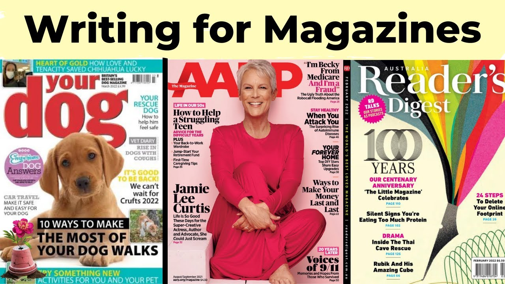

MEDIA AND INFORMATION
How to Identify Information?
First find reliable information, Reliable information must come from dependable sources. According to UGA Libraries, a reliable source will provide a “thorough, well-reasoned theory, argument, etc. based on strong evidence.”
Widely credible sources includes:
Scholarly, peer-reviewed articles and books

Trade or professional articles or books

Magazine articles, books and newspaper articles.
How to know if the information is reliable?
Accuracy
Compare the author’s information to that which you already know is reliable. Are there proper citations? Is the information biased? If so, does it affect research conclusions
Coverage
Is the information relevant to your topic and does it meet your needs? Consider what you need such as statistics, charts, and graphs.
Currency
Is your topic constantly evolving? Topics in technology and medical innovation require sources that are up to date.
Misinformation and Disinformation
MISINFORMATION
Refer to the spread of false information. It’s important to understand because it can have harmful effects. misinformation includes false information that is spread deliberately to deceive people. It can also include false information that is spread accidentally, without intending to deceive anyone.

DISINFORMATION
Disinformation is false or misleading information that is spread unintentionally. It is often used to influence public opinion or obscure the truth. Disinformation should not be confused with misinformation, which is false and misleading information deliberately spread by people who do not mean to fool people into thinking it is true.
Navigating Information Before and During Emergencies
How to Obtain Information
There are many ways and methods to gather and collect information for whatever project or research you may need to do. Here are some of the most common methods and reasons as to why they are effective in gathering information. Assessment is about gathering the necessary information about who you are as a literacy agency, your current strengths, weakness, opportunities and threats. Remember, at this point, you are simply gathering information on the current internal and external environment facing your literacy agency; you are not making any judgments or drawing any conclusions about what the information means for the future.
Obtaining Information
Questionnaires and Checklists
Used when you want to collect a lot of information from people in a non-threatening way.

Documentation Review
A tool that allows you to gather information on current practices without interrupting the program by examining program monitoring reports, annual reports, performance appraisals, board evaluations, written policies and procedures, memos, minutes, financial records, etc., is called a tool for data analysis.
Personal interviews
Interview is a qualitative method of data collection whose results are based on intensive engagement with respondents about a study. Interview can be structured (formal), semi-structured or unstructured (informal). It can be conducted through face-to-face meeting with the interviewee(s) or through telephone.
Observation
Observation method of information gathering is used by monitoring participants in a specific situation or environment at a given time and day. Basically, researchers observe the behaviour of the surrounding environments or people that are being studied. This type of study can be contriolled, natural or participant.
Focus Group
Used to explore a topic in depth with key stakeholders to learn what the common understanding is on various issues.

Case Studies
Used to depict experiences, processes or practices with a view to developing understanding through examination and cross comparisons.
Literature Sources
This method of data collection is referred to as secondary data collection. In comparison to primary data collection is inexpensive and not time consuming.
Surveys
Survey is another method of gathering information for research purposes. The results of this method of data collection are generally easy to analyze. Most agencies find that varying the information-gathering tools based on stakeholder and organizational needs yields the best results, experts say.